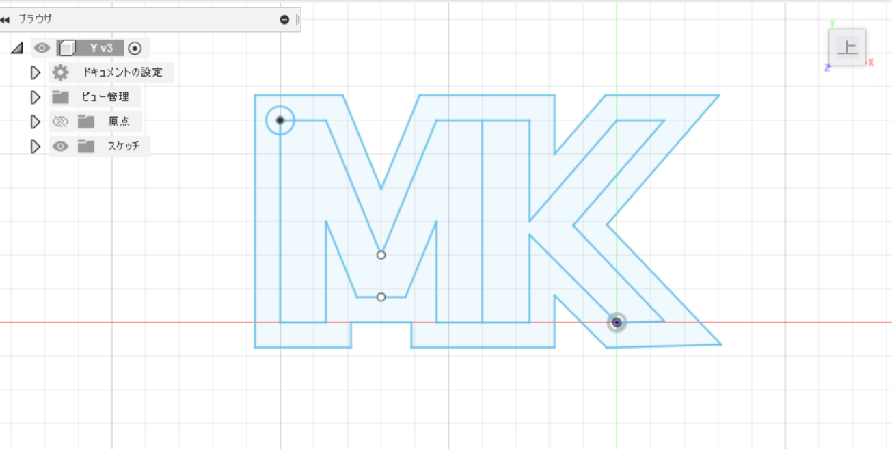
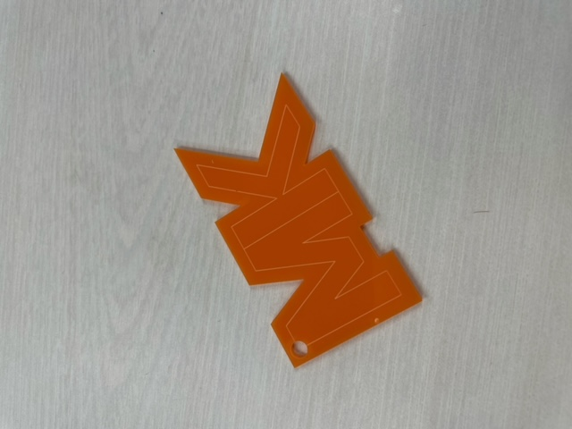
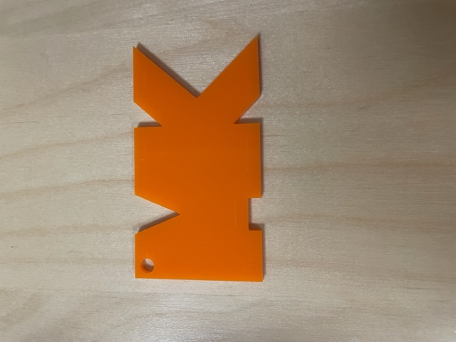
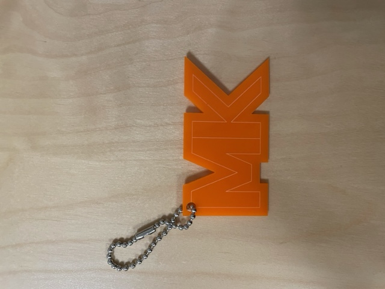
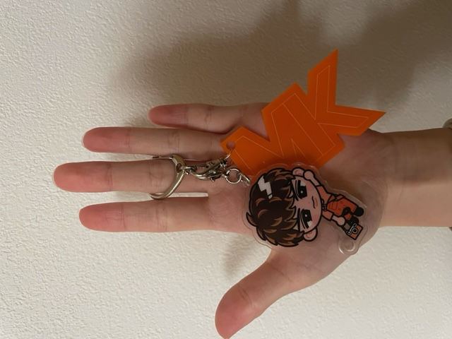

最終課題
アクリルキーホルダー
Fusionで描いたデザイン

実際に作った作品

作品の説明
心が動かされるもの、気分が高まるものを考えたときに思い浮かんだのが、普段使いできるものです。
作っても使わないと悲しいので普段持ち歩くキーホルダーに合うアクリルキーホルダーを作りたいと思いこの作品を作りました。
好きなアーティストのイニシャルチャームです♪
失敗作品

彫刻の線を細くしすぎたら、光に当てないと線が見えないほどになってしまった。
彫刻の黒い線は太くしてもおかしくないということがわかったので、太くして再チャレンジした。
アクリルキーホルダー


ボールチェーンやキャラクターのアクリルキーホルダーに付けてみました♪
動画作れなくてすみません！！！